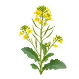

होम / सरसों

सरसों का भाव आज | Mustard Mandi Price Today
सरसों के आज के उपलब्ध मंडी भाव देखें—कोटा, बारां और श्रीगंगानगर के मॉडल, न्यूनतम और अधिकतम रेट।
नीचे मंडी-वार सूची में सरसों के उपलब्ध भाव दिए हैं। मंडी के नाम पर क्लिक करके उस मंडी की दूसरी फसलों के भाव भी देख सकते हैं।
सरसों का भाव कैसे देखें और रेट किन बातों से बदलता है
सरसों का भाव तेलहन बाजार, मंडी की आवक और माल की गुणवत्ता के साथ बदलता है। एक ही दिन अलग मंडियों में दर अलग हो सकती है, इसलिए उपलब्ध भावों की तुलना उपयोगी रहती है।
आज का सरसों भाव कैसे देखें
इस पेज की मंडी-वार तालिका में न्यूनतम, मॉडल और अधिकतम भाव देखें। अपनी नज़दीकी मंडी तथा उपलब्ध दूसरी मंडियों के भाव की तुलना करके फैसला लेना अधिक उपयोगी रहता है।
- अपनी मंडी या राज्य चुनकर भाव देखें।
- न्यूनतम, मॉडल और अधिकतम भाव में अंतर समझें।
- पुराने और नए उपलब्ध रिकॉर्ड में फर्क देखकर निर्णय लें।
गुणवत्ता और ग्रेड का असर
सरसों में दाने की सफाई, नमी, तेल की मात्रा और बाहरी मिलावट भाव पर असर डालती है। एक ही नाम की सरसों में अलग lot की गुणवत्ता अलग हो सकती है।
आवक, मांग और बाजार
नई फसल की आवक, तेल मिलों की खरीद और खाद्य तेल की मांग से सरसों बाजार प्रभावित होता है। MSP सरकारी खरीद का समर्थन मूल्य है; खुली मंडी में कीमत अलग हो सकती है।
सरसों बेचने या खरीदने से पहले ध्यान रखें
- नमी और सफाई देखकर अपना lot अलग रखें।
- नज़दीकी तेलहन मंडियों के मॉडल भाव की तुलना करें।
- सरकारी खरीद की शर्तें और केंद्र की जानकारी अलग से जाँचें।
अक्सर पूछे जाने वाले सवाल
आज सरसों का लाइव रेट क्या है?
सरसों के आज के ताज़ा बाजार भाव और दैनिक उतार-चढ़ाव की पूरी जानकारी इस पेज पर ऊपर दी गई टेबल में उपलब्ध करा दी गई है। विभिन्न मंडियों में सरसों की आवक, तेल की मात्रा (लैब प्रतिशत) और क्वालिटी के अनुसार दामों में अंतर देखने को मिलता है। सरसों के न्यूनतम, अधिकतम और मॉडल भाव के उपलब्ध रिकॉर्ड के लिए कृपया पेज को ऊपर की तरफ स्क्रॉल करें और आज की ताज़ा लिस्ट देखें। हमसे जुड़े रहने के लिए WhatsApp ग्रुप जॉइन करें।
Sarso ka bhav
इसकी विस्तृत जानकारी ऊपर दी गई मंडी भाव सारणी में उपलब्ध है। कृषि जिंसों के ये दाम दैनिक आवक, गुणवत्ता और बाजार की मांग के अनुसार बदलते रहते हैं। सटीक और ताज़ा आंकड़ों के लिए, हमसे जुड़े रहने के लिए WhatsApp ग्रुप जॉइन करें।